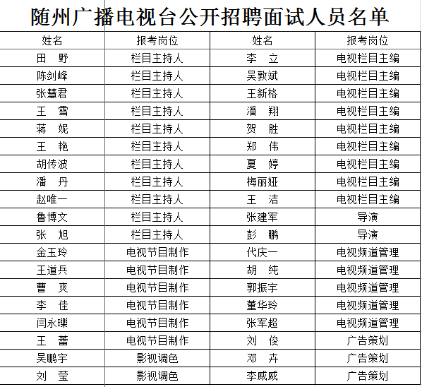

一、面试人员
随州广播电视台公开招聘包括栏目主持人、电视节目制作、影视调色、电视栏目主编、导演、电视频道管理、广告策划等共七个专业岗位，全部参加本次统一组织的面试。
二、面试时间及地点
1、面试时间
面试时间为2016年10月12日。
其中栏目主持人岗位面试考生于上午8:00前到随州广播电视台七楼演播厅报到，8:30开始面试；电视节目制作、影视调色岗位面试考生于上午8:00前到随州广播电视台五楼制作室报到，8:30开始面试；电视栏目主编、导演、电视频道管理、广告策划面试考生于下午13:30前到随州市劳动就业管理局就业训练中心报到，14:00开始面试。
面试考生必须按照规定时间报到，抽签确定面试顺序，迟到考生不得进入考场。
2、面试地点
栏目主持人、电视节目制作、影视调色岗位面试地点：随州广播电视台七楼演播厅。其中电视节目制作、影视调色岗位技能操作考试地点：随州广播电视台五楼制作室。
电视栏目主编、导演、电视频道管理、广告策划等岗位面试地点：随州市劳动就业管理局就业训练中心。
三、面试的内容及方法
1、栏目主持人岗位：
（1）坐播试镜（30分）。 考生在播音台上，面对摄像机镜头口播一组新闻稿。考官从外貌形态、神态气质、播音表情、音色音准等方面综合给出评分。参加考试人员应完全按照广播电视节目播音员主持人的要求化妆并准备服饰。
（2）站立播音（30分）。 考生在播音台上，面对摄像机镜头主持一组节目，考官从语音、语速、语调、情感、主持特色等方面综合给出评分。
（3）整体评价（40分）。 考官通过观看考生试镜视频情况，结合面试现场表现打出印象分。
面试成绩为100分。面试试题均按答题限时时间掌握。面试限时要求：坐播试镜限时5分钟，站立播音限时5分钟。
2、电视栏目主编岗位：
（1）模拟采访（40分）。
（2）节目策划（30分）。
（3）综合协调（30分）。
面试成绩为100分，限时15分钟。
3、电视频道管理岗位：
（1）宣传管理（40分）。
（2）节目管理（30分）。
（3）人员管理（30分）。
面试成绩为100分，限时15分钟。
4、电视节目制作岗位：
（1）电视媒体节目制作技术（40分）。
（2）制作软件使用能力与艺术功底（30分）。
（3）综合评述（30分）。综述创作思路及工作流程，回答考官提出的1个问题。
面试成绩为100分，操作120分钟，综合评述及考官提问15分钟。
5、影视调色岗位：
（1）影视后期调色技术（40分）。
（2）制作软件使用能力及艺术功底（30分）。
（3）综合评述（30分）。综述创作思路及工作流程，回答考官提出的1个问题。
面试成绩为100分，操作120分钟，综合评述及考官提问15分钟。
6、广告策划岗位：
（1）广告经营能力（40分）。
（2）广告基本知识（30分）。
（3）广告策划能力（30分）。
面试成绩为100分，限时15分钟。
7、导演岗位：
（1）大型晚会策划（40分）。
（2）大型活动编排（30分）。
（3）调度和协调能力（30分）。
面试成绩为100分，限时15分钟。
四、面试程序
栏目主持人、电视节目制作、影视调色等三个专业岗位的面试考生，参加统一抽签确定面试顺序后，按照规定的程序和要求进行面试。
其他四个专业岗位的面试，按电视栏目主编、导演、电视频道管理、广告策划的顺序，参加统一抽签确定面试顺序后，按下列程序进行：
1、面试考生必须提前30分钟进入候考室，抽签决定本岗位面试次序。
2、面试试题由考场监督人员验封签字，由主考官当场拆封。
3、引导员负责引导考生进入考场。
4、主考官宣读试题后，记时员开始记时。
5、答题时间为15分钟，到15分钟时记时员要求考生停止答题。
6、考生答题结束后，各考官按照题本和评分表的要求进行打分。
7、各考官评分结束后，由报分员当场宣读考官打分，监督员和记分员按照去掉一个最高分、去掉一个最低分，计算出面试平均分数（保留小数点后2位），由报分员当场宣布最后得分。
8、考生对本人得分签字确认后退出考场。
五、注意事项
（一）考生要密切留意随州广播电视台的相关通知或公告（包括网站通知或公告），并保持电话联络畅通。建议考生提前熟悉考场，预留足够时间，避免因迟到而造成遗憾。
（二）考生须按照公布的面试时间与考场安排，在当天面试开考前30分钟凭本人准考证和身份证到指定考场报到，参加面试抽签。《面试考生须知》见附件2。
（三）考生要服从面试现场工作人员的管理，对违反面试规定的，将按照事业单位公开招聘有关规定严肃处理。
本公告随州广播电视台网站发布，考生如有疑问请与随州广播电视台联系咨询。
附件：
1、随州广播电视台公开招聘面试人员名单
2、面试考生须知
附件一：

附件二：
面试考生须知
一、考生须按照公布的面试时间及考场安排，在面试开考前30分钟，凭本人笔试准考证和身份证到指定考场报到，参加面试抽签。未能依时报到的，按自动放弃面试资格处理；对证件携带不齐的，取消面试资格。
二、考生报到后，应将所携带的通讯工具和音频、视频发射、接收设备关闭后连同其他物品交工作人员统一保管，面试结束离场时领回。
三、考生报到后，工作人员按分组顺序组织考生抽签，决定面试的先后顺序，考生应按抽签确定的面试顺序进行面试。考生应留意自己所在岗位分组是否与本人报考的岗位对应。
四、面试开始后，工作人员按抽签顺序逐一引导考生进入面试室面试。候考的考生实行封闭管理，须在候考室静候，不得喧哗，不得影响他人，应服从工作人员的管理，不得擅自离开候考室。需上洗手间的，应经工作人员同意，并由工作人员陪同前往。候考的考生需离开考场的，应书面提出申请，经考场主考同意后按弃考处理。严禁任何人向考生传递试题信息。
五、考生必须以普通话回答考官提问。在面试中，应严格按照考官的提问回答，不得报告、透露或暗示个人信息，其身份以抽签编码显示。如考生透露个人信息，按违规处理，取消面试成绩。考生不得穿制服或有明显文字、图案标识的服装参加面试。考生对考官的提问不清楚的，可要求考官重新念题（所需时间占用本人答题时间）。
六、面试结束后，当场等候宣布面试得分，签字确定后离开考场。考生须服从考官对自己的成绩评定，不得要求加分、复试或无理取闹。
七、考生面试完毕，领回交由工作人员保管的本人物品后（请认真核对、不要领错别人的物品）离开考场，不得在考场附近逗留。
客户端下载
官方微信